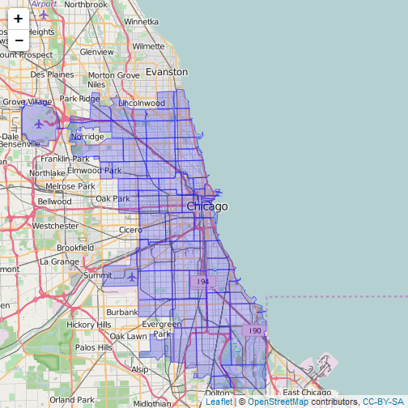

The shiny app can be used to extract detailed crime profile of a postcode.
All one has to do is click on a postcode and select required options
It can cater to many different usecases like
- Crime Profiler
- Insurance
- Urban Planning
The shiny app can be used to extract detailed crime profile of a postcode.
All one has to do is click on a postcode and select required options
It can cater to many different usecases like
Shiny and ShinyDashboard for making the app
Leaflet to use OpenStreet Map
ggmap to overlay a shape file of postalcode boundaries
plotly to display the line chart

Using tools such as R for data science can be very helpful in many avenues still unearthed
Thanks for such a great specialization